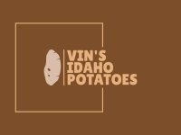

VIN'S IDAHO POTATOES
Favroite Receipe
Our mashed potatoes recepie
-
Use Yukon Gold Potatoes. They are the best potatoes for mashing. ..
- Boil Your Potatoes in Large Pieces. ...
- Keep Your Potatoes Hot. ...
- Add Fat First. ...
- Taste Constantly. ...
- Don't Add Your Liquid All at Once. ...
- Infuse Your Fat with Aromatics.
Baked Potato
-
Russet potatoes: Technically, you can make baked potatoes with any
type of potatoes. But to make the best baked potatoes, I strongly
believe that Russets are the way to go. The skins of Russet potatoes
are nice and thick, which allow them to crisp up perfectly in the
oven. And the insides are starchy, which make for an extra fluffy
and sweet filling.
-
Butter or olive oil: I also strongly recommend using butter to crisp
up your potato skins, which adds so much flavor and helps the skins
get extra golden. But if you prefer not to cook with butter, you
could sub in whatever type of high-heat cooking oil you prefer. (I
would recommend avocado oil or regular olive oil, not extra-virgin.)
Our baked potatoes
-
Similar to this Grilled Salmon in Foil, grilling the potatoes in
foil traps heat, allowing the potatoes to steam and the insides to
become tender.
-
The heat of the grill turns the outsides deep golden and crisp. I
always pick the crispiest ones of the pack.